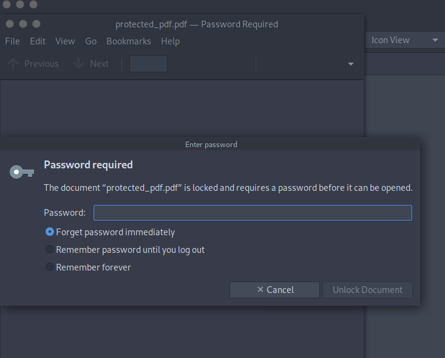

Dans ce petit tutoriel
rapide, je montrerai
comment utiliser
Johnny, avec quelques
exemples.
Introduction:
Installation:
Comment l'utiliser ?
Johnny est l'interface graphique Open Source multiplateforme pour le célèbre craqueur de mots de passe John the Ripper.L'objectif de Johnny est d'automatiser et de simplifier la routine de
craquage de mots de passe à l'aide de l'extrêmement polyvalent et robuste John the Ripper, ainsi que d'ajouter des fonctionnalités supplémentaires, comme l'amélioration du flux de travail
des hashs et des mots de passe, la gestion des attaques multiples et des sessions, la définition aisée de règles d'attaque complexes, le feedback visuel et les statistiques.
Pour Windows, il suffit de télécharger la version du programme qui convient à votre système d'exploitation et d'exécuter le programme d'installation.
Manuel d'installationPour linux, vous devrez télécharger les sources depuis github. Les étapes se trouvent dans le lien précédent.
Il s'agit de la page d'accueil ou de la page principale dès que vous chargez Johnny pour la première fois :
Dans ce cas, j'inclurai le dictionnaire de mots de passe rockyou.txt
Vous devrez également lui donner l'exécutable de base de John the Ripper
Reprenons l'exemple du pdf
Pour cet exemple, j'ai créé un fichier PDF crypté avec un mot de passes aléatoires.
Maintenant, revenons à Johnny. Cliquez sur Fichier - Ouvrir un autre format de fichier et choisissez pdf et remplissez les informations que vous souhaitez.
Cette étape vous donnera un ensemble de hachages. Enregistrez-les dans un fichier .txt et passez aux étapes suivantes.
Il suffit de charger ces fichiers au format mot de passe dans johnny et de lancer une nouvelle attaque.
Et voici le mots de passe cracké avec succès :
Vous pouvez également l'extraire dans un fichier séparé :
Et c'est tout. Un petit exemple, court et rapide. Il existe de nombreuses fonctionnalités et manières différentes de craquer ces mots de passe, méthodes et cryptages disponibles.
N'hésitez pas à les tester et à vous amuser.